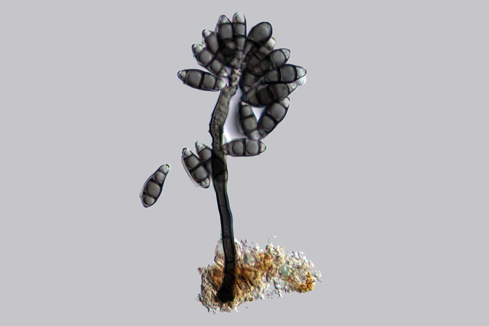
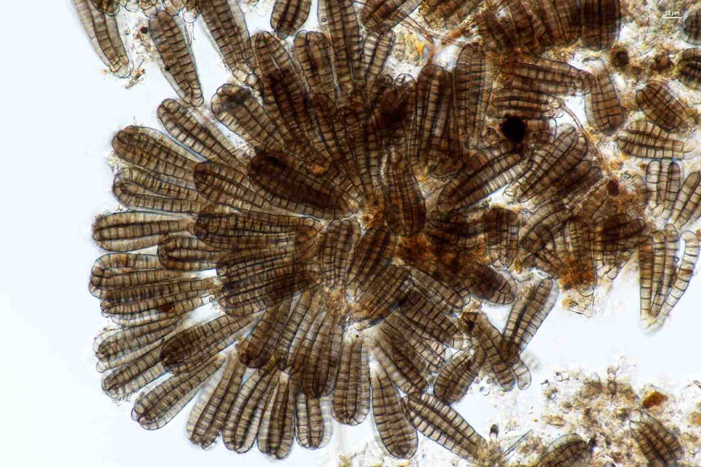
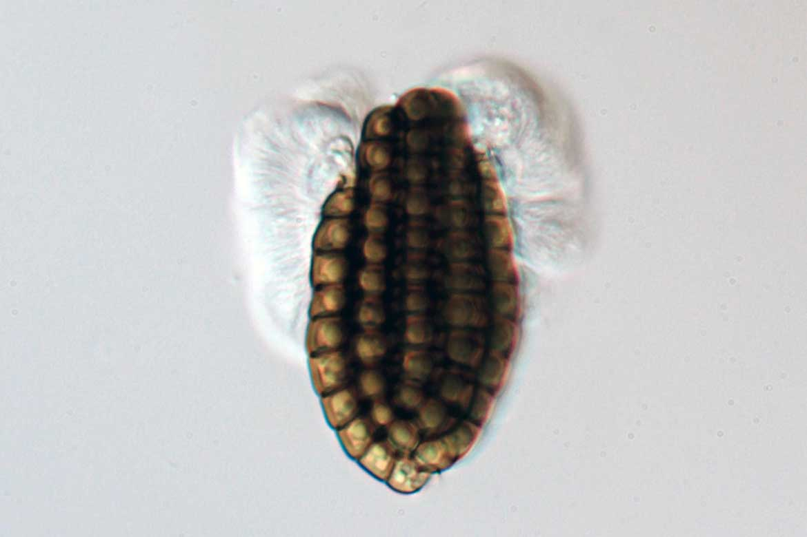

The website focuses on three primary goals.
1) To provide an up-to-date outline of the freshwater fungi.
2) To provide notes on orders, families and genera of freshwater fungi.
3) To provide updated accounts of each genus keeping abreast of the current literature.
The website will also provide a list of references dealing with freshwater fungi.
We hope that all mycologists will contribute to this web page over time and it will provide a complete one stop shop where details of freshwater fungal genera and species, molecular data as well as their roles, biosecurity issues, economic significance and industrial relevance can be sourced.
Highlight Information

Up-to-date classification of freshwater fungi

Provide notes on families, genera & species of freshwater fungi with molecular data, phylogenetic and evolution trees

Provide illustrations and plates of freshwater fungi genera
RECENT GENUS
Acarella Syd., Annls mycol. 25(1/2):123(1927)
(2019)
Asterinema Bat. & Gayão, Anais IV Congr. Soc. bot. Brasil: 1